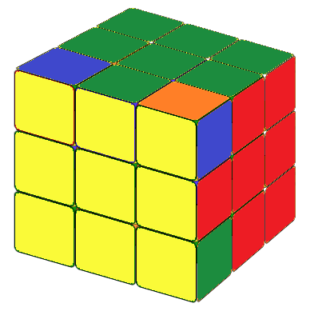

Let us solve the first layer, traditionally the white layer. There are many ways to do this. We present here a simple and basic method that proceeds layer by layer. Follow the steps indicated in the images below, play with the cube, you will find the way that is most comfortable for you. You can practice with the virtual cube here.


Let us first rotate the cube 180 degrees so that the white layer is at the bottom and we have an upside down T. The middle pieces of the second layer should already be in the correct position from step 1. We need to make sure that the edges of the second layer are the same color as the middle piece. Now, if you move the upper layer of the cube to the left or right, we will see three cases indicated by the images below.
(a) We need to move the front-up edge cubie (facing us) to the front-right edge position (Fig 2a). In this case, try to apply the following formula: "To the Right":
(b) A mirror image of situation (a) where we need to move the front-up edge cubie to the front-left edge position (Fig 2b). In this case, try the formula: "To the Left":


Notice that in each formula, the first step always moves the cubie farther away from the postion it wants to go.
(c) None of the above.
This can only mean one thing: The edge piece we need is at the edge position in the second layer, but in the wrong place or orientation. In this case, we could apply one of the two formulas above to bring the needed piece to the upper layer. In other words: We replace a random edge piece of the upper layer with the edge piece we want. Then we encounter situation (a) or (b) again.
Slove the second layer: To the Left or Right

Now we need to solve the upper yellow layer. Understandably, this will be the most difficult part, since we need to keep the layers we already solved intact while we change the upper layer. First, let us make a yellow cross on the upper layer. We would encount a few different situations indicated below. For each situation we can apply the same simple formula: Fruit.


This formula will be used more than once. If the top layer only has a yellow center (Fig.3a), we need to use it 3 times. If the top layer has a 90 degree rotated L (Fig.3b or Fig.3c), we need to use it twice. If the top layer has a yellow line(Fig.3d or Fig.3e),make the line horizontal (Fig.3e), we should get a yellow cross after using it once. You can check the formula animation here. Fruit
Now we need to take care of the 4 corner pieces on the upper layer. It will be in one of the following five situations.


When there are three non-yellow color on the up layer (Fig.4a and Fig.4b), we call them fish patterns.
Move the upper layer, so that fish heads are in the back left or back right corner and make sure that for each case there is a yellow color on the back-layer.
Then we will only have the following two situations:
(1) The fish head is on the left corner (Fig.4a), we call it counter-clockwish fish pattern and we can
solve this using counter-Clockwise fish formula:
In counter-clockwish fish pattern, the yellow color in the back runs counter-clockwise toward the fish head, and in the formula, the upper layer always turns counterclockwise. In the clockwise fish formula, the yellow color in the back runs clockwise toward the fish head, and in the formula, the upper layer always turns clockwise.
In this case, we will still use the two formulas above, but we need to use them more than once. If there are two cubies whose colors are not right, we turn the cube so that the color at the back of the left-back corner cubie is yellow; if there are four cubies whose colors are not right, we turn the cube so that the color at the left of the left-back corner cubie is yellow. After placing the cube in a correct initial condition, we apply the counter-clockwise fish formula, then the cube will show one of the fish patterns as discribed in (a).
Animation: Clockwise or Counter-clockwish Fish Patterns
Here we have two cases:



In this case (Fig. 5a), we need to place the side whose two corner pieces have the same color on the right side and make the yellow layer the front layer (the one facing us) then we apply the following formula: R2D2.
Do not forget to rearrange the cube after applying the formula, so that the yellow layer is the upper layer again.
This is the last step. We're almost there. Now the top yellow layer of the cube can only be in one of the following 4 situations.


In the first two cases (Fig. 6a and Fig. 6b, there is one side that is solved (hence its edge piece is in right color) and three edges that have wrong colors. In these cases, we need to use both the clockwise fish pattern formula and the counterclockwise fish pattern formula, but in different order. Let us position the cube so that the solved side faces us.
In this case, we apply formula: counter-clockwise fish + rotate the entire cube to the right + clockwise fish
In this case, we apply formula: clockwise fish + rotate the whole cube to the left + counter-clockwise fish the cube.
In this case, you can use either the clockwise fish formula or the counterclockwise fish formula. The cube is then converted to situation (a) or situation (b). You can also save a lot of time by remembering two more very simple formulas.
For the situation in Fig. 6c apply the formula: M2 U M2 U2 M2 U M2
For the situation in Fig. 6d apply the formula: M2U M2U MU2 M2U2 MU2
Animation: The last stepNotice that in the situation in Fig. 6d, we exchange the colors between two pairs: Front-Right and Back-Left. If you find that this is not the case, simply move the entire cube to the left or right and then apply the formula.
Pay special attention to the initial position of the cube before applying any formulas. Most errors result from an incorrect starting position.
Now you have solved the Rubik's Cube. Have fun!